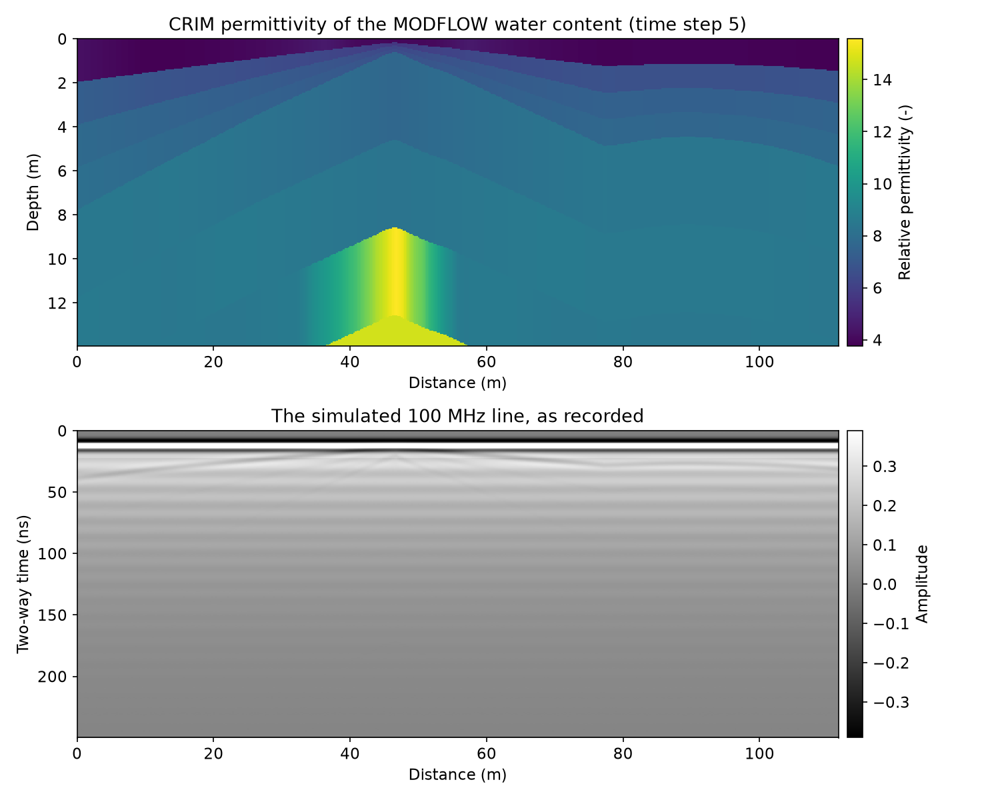
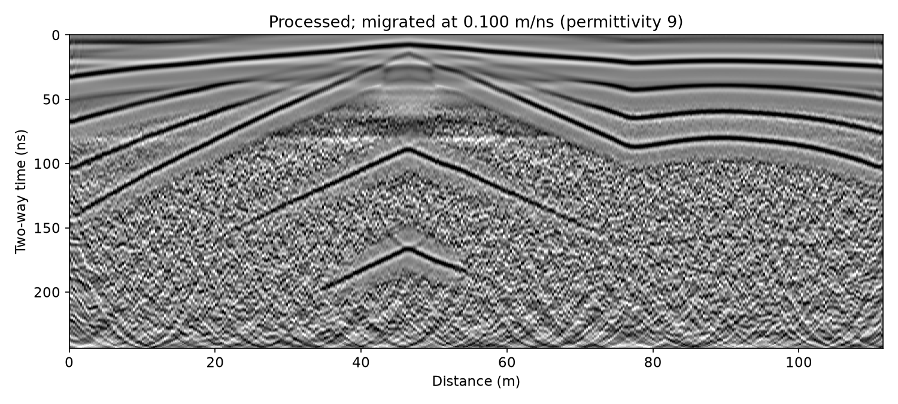
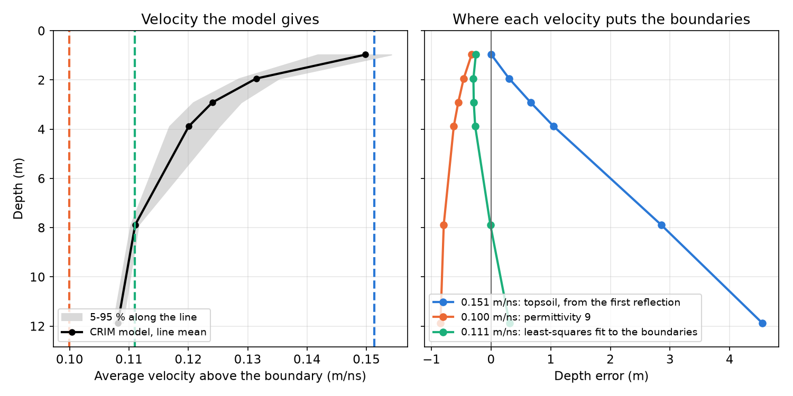
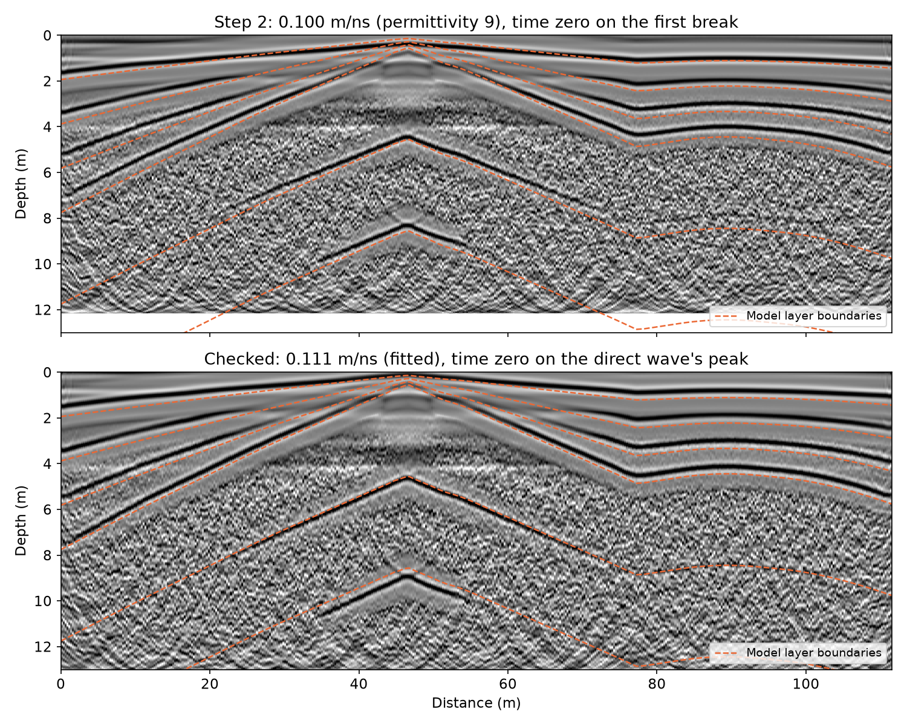
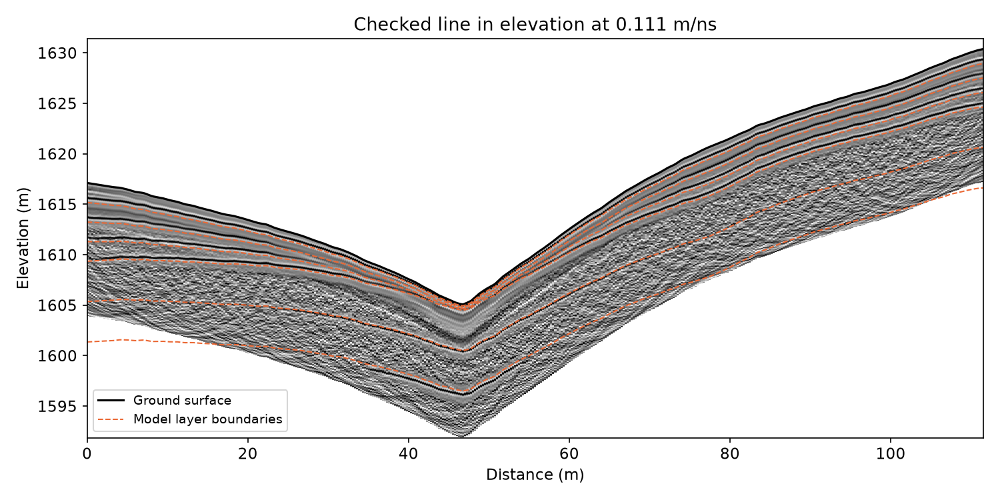

Note
Go to the end to download the full example code.
Ex. GPR Workflow: A Radar Line over the Hydrological Model, from Radargram to Depth#
This example runs the package’s ground-penetrating radar (GPR) tools,
PyHydroGeophysX.data_processing.gpr, on a line simulated over the MODFLOW
model shipped in examples/data.
The simulated 100 MHz line: the model’s water content and porosity turned into relative permittivity with the CRIM mixing law, and the radargram as recorded
Processing with one recipe: dewow, time zero, band-pass, background removal, F-K migration and gain
Checking time zero and the velocity against the CRIM permittivity that made the line, so that a wrong choice shows up as nanoseconds and metres, not as a plausible picture
The line in depth and in elevation, with the model’s layer boundaries drawn over it
Saving the processed line and reading it back
GPR needs only NumPy and SciPy. Every length axis is drawn in the unit set by
LENGTH_UNIT below: "ft" shows feet, while the data stay in metres.
Step 1: The simulated line#
gpr.example_profile samples the model’s water content (time step 5, as
in the ERT workflow example) and porosity along the line Ex_ERT_workflow
takes through the catchment. CRIM (gpr.crim_permittivity) turns them into
relative permittivity, and gpr.synthetic_profile draws a 100 MHz
radargram over the model’s layers: each boundary reflects, and the record
carries what a real system adds - a delay before the direct wave, a slow
drift (“wow”), antenna ringing and noise. The permittivity and the layer
boundaries stay in the line’s metadata; they are the truth Step 3
checks against.
from pathlib import Path
import json
import sys
current_dir = Path(__file__).resolve().parent if "__file__" in globals() else Path.cwd()
repo_root = current_dir.parent
if str(repo_root) not in sys.path:
sys.path.insert(0, str(repo_root))
import matplotlib.pyplot as plt
import numpy as np
from PyHydroGeophysX.data_processing import gpr
from PyHydroGeophysX.visualization.axis_units import set_length_axis, set_length_unit
LENGTH_UNIT = "m" # "ft" draws every length axis in feet
set_length_unit(LENGTH_UNIT)
plt.rcParams.update({"font.size": 11})
data_dir = current_dir / "data"
output_dir = current_dir / "results" / "GPR"
output_dir.mkdir(parents=True, exist_ok=True)
line = gpr.example_profile(data_dir)
print(line.describe())
print(line.source)
permittivity = line.metadata["permittivity"] # (14 layers, traces), from CRIM
boundaries = line.metadata["boundary_depths"] # (15, traces): ground surface, then each layer's base, m
x = line.positions
BOUNDARY_COLOR = "#eb6834"
def show_radargram(ax, data, y, title):
"""A radargram on ``ax``: grey, clipped at the 98th percentile of |amplitude|."""
finite = np.abs(data[np.isfinite(data)])
clip = float(np.percentile(finite, 98)) or 1.0
half = 0.5 * (y[1] - y[0])
ax.imshow(data, aspect="auto", cmap="gray", vmin=-clip, vmax=clip, interpolation="nearest",
extent=[x[0], x[-1], y[-1] + half, y[0] - half])
set_length_axis(ax, "x", "Distance")
ax.set_title(title)
# The permittivity section: the layer each depth falls in, trace by trace.
z_grid = np.arange(0.0, 14.0, 0.05)
layer = np.sum(z_grid[:, None, None] >= boundaries[None, 1:, :], axis=1)
eps_section = np.take_along_axis(permittivity, np.clip(layer, 0, permittivity.shape[0] - 1), axis=0)
fig, axes = plt.subplots(2, 1, figsize=(10, 8))
image = axes[0].imshow(eps_section, aspect="auto", cmap="viridis", interpolation="nearest",
extent=[x[0], x[-1], z_grid[-1], z_grid[0]])
fig.colorbar(image, ax=axes[0], pad=0.01, label="Relative permittivity (-)")
set_length_axis(axes[0], "x", "Distance")
set_length_axis(axes[0], "y", "Depth")
axes[0].set_title("CRIM permittivity of the MODFLOW water content (time step 5)")
show_radargram(axes[1], line.data, line.time_ns, "The simulated 100 MHz line, as recorded")
axes[1].set_ylabel("Two-way time (ns)")
fig.colorbar(axes[1].images[0], ax=axes[1], pad=0.01, label="Amplitude")
fig.tight_layout()
fig.savefig(output_dir / "line_as_recorded.png", dpi=150)
plt.show()
The line and the model that made it#
Top: the relative permittivity CRIM gives the model’s water content and porosity. The dry topsoil (about 4) sits over wetter layers (6-15). Bottom: the radargram as recorded. The direct wave at 12 ns and the drift under it dominate, and the reflections below are faint.


Step 2: Processing#
A recipe is a list of steps, each a name with that step’s settings.
gpr.process runs them in the standard order, whatever order the list is
in, and writes each into the line’s history. The band runs from a
quarter to 2.5 times the antenna frequency, as the studio’s GPR page sets
it. Migration needs a velocity before one has been measured, so this first
pass takes the common starting value: a moist soil of relative permittivity
9.
v_start = gpr.velocity_from_permittivity(9.0)
recipe = [
{"name": "dewow"}, # running mean over three antenna periods
{"name": "time_zero"}, # on the direct wave's first break
{"name": "bandpass", "low_mhz": 25, "high_mhz": 250},
{"name": "background"}, # the line's mean trace removed
{"name": "migrate", "velocity": v_start},
{"name": "gain", "kind": "agc", "window_ns": 25},
]
processed = gpr.process(line, recipe)
print("\n".join(processed.history))
print(processed.describe())
fig, ax = plt.subplots(figsize=(10, 4.5))
show_radargram(ax, processed.data, processed.time_ns,
f"Processed; migrated at {v_start:.3f} m/ns (permittivity 9)")
ax.set_ylabel("Two-way time (ns)")
fig.tight_layout()
fig.savefig(output_dir / "line_processed.png", dpi=150)
plt.show()
The processed line#
The direct wave, the drift and the ringing are gone. The reflections from the model’s layer boundaries run across the line, lifted by the gain.


Step 3: Checking time zero and velocity against the model#
A radargram converted with the wrong velocity looks as plausible as one
converted with the right one; only a comparison with something known shows
the difference. Here the known thing is the CRIM permittivity that made the
line. gpr.velocity_from_permittivity turns each layer’s permittivity
into a radar velocity, which gives the two-way time down to every layer
boundary and the average velocity above it, 2 d / t.
v_layer = gpr.velocity_from_permittivity(permittivity)
depth = boundaries[1:] # each layer's base, m
t_model = 2.0 * np.cumsum(np.diff(boundaries, axis=0) / v_layer, axis=0) # two-way time, ns
v_average = 2.0 * depth / t_model
inside = t_model <= processed.time_ns[-1] # the boundary points the record reaches
seen = inside.mean(axis=1) >= 0.5 # boundaries the record reaches on most traces
print("Boundary depth (m) two-way time (ns) average velocity (m/ns), line means")
for k in np.flatnonzero(seen):
print(f"{k + 1:8d} {depth[k].mean():10.2f} {t_model[k].mean():15.1f} {v_average[k].mean():18.3f}")
Time zero#
The first reflection, from the base of the dry topsoil about 1 m down, is
the strongest on the line. On every trace its time is picked as the largest
amplitude within 8 ns of the time the model gives, on the line processed up
to the background removal (no migration or gain to move it). The recipe put
time zero on the direct wave’s first break, while the reflection is timed on
its peak, so the picks come out half a wavelet late, and the depth the model
gives for this boundary turns that into a slow velocity. Putting time zero
on the direct wave’s peak instead (threshold 0.9: the first sample
within 90 % of its largest amplitude) times both the same way.
def pick_times(profile, expected, half_window=8.0):
"""Time of the largest amplitude within ``half_window`` ns of ``expected``, trace by trace."""
t = profile.time_ns
picks = np.empty(profile.n_traces)
for j in range(profile.n_traces):
near = np.abs(t - expected[j]) <= half_window
picks[j] = t[near][np.argmax(np.abs(profile.data[near, j]))]
return picks
peak_zero = {"name": "time_zero", "threshold": 0.9}
v_topsoil_model = float(np.median(v_average[0]))
late, v_picked = {}, {}
for label, zero in (("first break", recipe[1]), ("peak", peak_zero)):
steps = [zero if step["name"] == "time_zero" else step for step in recipe
if step["name"] not in ("migrate", "gain")]
picked = pick_times(gpr.process(line, steps), t_model[0])
late[label] = float(np.mean(picked - t_model[0]))
v_picked[label] = float(np.median(2.0 * depth[0] / picked))
print(f"Time zero on the {label}: reflection {late[label]:+.2f} "
f"+/- {np.std(picked - t_model[0]):.2f} ns from the model's time; its velocity "
f"{v_picked[label]:.3f} m/ns against the model's {v_topsoil_model:.3f} "
f"({100 * (v_picked[label] / v_topsoil_model - 1):+.1f} %)")
v_topsoil = v_picked["peak"]
One velocity for the line#
gpr.time_to_depth converts the whole line with one velocity, but the
average velocity falls from about 0.15 m/ns over the dry topsoil to about
0.11 m/ns at 12 m: no single value puts every boundary at its depth. Three
candidates, and how far each places the boundaries from their model depths:
the topsoil velocity the first reflection just measured;
permittivity 9, the starting value Step 2 migrated with;
the velocity that fits every boundary point the record reaches, by least squares on depth.
d, t = depth[inside], t_model[inside]
v_fit = 2.0 * np.sum(d * t) / np.sum(t * t)
candidates = {
"topsoil, from the first reflection": v_topsoil,
"permittivity 9": v_start,
"least-squares fit to the boundaries": v_fit,
}
CANDIDATE_COLORS = ["#2a78d6", "#eb6834", "#1baf7a"]
def boundary_errors(v, time_shift=0.0):
"""Depth error of each boundary the record reaches, m: line mean and largest along the line."""
error = np.where(inside, gpr.time_to_depth(t_model + time_shift, v) - depth, np.nan)[seen]
return np.nanmean(error, axis=1), np.nanmax(np.abs(error))
depth_error = {}
for name, v in candidates.items():
depth_error[name], worst = boundary_errors(v)
print(f"{name}: {v:.3f} m/ns (permittivity {gpr.permittivity_from_velocity(v):.1f}); "
f"largest depth error along the line {worst:.2f} m")
print()
print("Boundary model depth (m) depth error (m) at each velocity above, line means")
for i, k in enumerate(np.flatnonzero(seen)):
errors = " ".join(f"{depth_error[name][i]:+6.2f}" for name in candidates)
print(f"{k + 1:8d} {depth[k].mean():14.2f} {errors}")
depth_seen = depth[seen].mean(axis=1)
fig, axes = plt.subplots(1, 2, figsize=(10, 5), sharey=True)
low, high = np.percentile(v_average[seen], [5, 95], axis=1)
axes[0].fill_betweenx(depth_seen, low, high, color="0.85", label="5-95 % along the line")
axes[0].plot(v_average[seen].mean(axis=1), depth_seen, "k-o", ms=5, lw=2,
label="CRIM model, line mean")
for (name, v), color in zip(candidates.items(), CANDIDATE_COLORS):
axes[0].axvline(v, color=color, lw=2, ls="--")
axes[1].plot(depth_error[name], depth_seen, "-o", color=color, lw=2, ms=6,
label=f"{v:.3f} m/ns: {name}")
axes[1].axvline(0.0, color="0.4", lw=1)
axes[0].set_xlabel("Average velocity above the boundary (m/ns)")
axes[0].legend(loc="lower left", fontsize=9)
axes[1].legend(loc="lower left", fontsize=9)
set_length_axis(axes[1], "x", "Depth error")
set_length_axis(axes[0], "y", "Depth")
axes[0].set_ylim(depth_seen.max() * 1.08, 0.0)
for ax in axes:
ax.grid(True, alpha=0.3)
axes[0].set_title("Velocity the model gives")
axes[1].set_title("Where each velocity puts the boundaries")
fig.tight_layout()
fig.savefig(output_dir / "velocity_check.png", dpi=150)
plt.show()
The velocity, checked#
Left: the average velocity above each boundary, from the CRIM permittivity, with the three candidates as dashed lines. Right: how far each candidate places the boundaries from their model depths (line means). The topsoil velocity is right for the first metre and puts the boundary at 12 m about 4.5 m too deep. Permittivity 9 puts every boundary too shallow, by 0.3 to 0.85 m. The fit errs by 0.3 m at most on average and 0.47 m at worst along the line: too shallow above 4 m, too deep at the bottom of the record.


Step 4: The line in depth and in elevation#
The recipe runs again with the two corrections: time zero on the direct wave’s peak and migration at the fitted velocity.
gpr.time_to_depth turns two-way time into depth (d = v t / 2). The
model’s boundaries are drawn over Step 2’s line, put in depth at
permittivity 9 with time zero on the first break, and over the checked line.
checked_recipe = [peak_zero if step["name"] == "time_zero"
else {"name": "migrate", "velocity": v_fit} if step["name"] == "migrate"
else step for step in recipe]
final = gpr.process(line, checked_recipe)
print("\n".join(final.history))
for label, v, shift in (("Step 2's line", v_start, late["first break"]),
("Checked line", v_fit, late["peak"])):
mean_error, worst = boundary_errors(v, shift)
print(f"{label}: boundaries {mean_error.min():+.2f} to {mean_error.max():+.2f} m from their "
f"model depths (line means), {worst:.2f} m at most")
fig, axes = plt.subplots(2, 1, figsize=(10, 8), sharex=True)
for ax, profile, v, title in (
(axes[0], processed, v_start,
f"Step 2: {v_start:.3f} m/ns (permittivity 9), time zero on the first break"),
(axes[1], final, v_fit,
f"Checked: {v_fit:.3f} m/ns (fitted), time zero on the direct wave's peak")):
show_radargram(ax, profile.data, gpr.time_to_depth(profile.time_ns, v), title)
ax.plot(x, depth[seen].T, color=BOUNDARY_COLOR, lw=1.2, ls="--")
ax.plot([], [], color=BOUNDARY_COLOR, lw=1.2, ls="--", label="Model layer boundaries")
ax.legend(loc="lower right", fontsize=9)
ax.set_ylim(13.0, 0.0)
set_length_axis(ax, "y", "Depth")
axes[0].set_xlabel("")
fig.tight_layout()
fig.savefig(output_dir / "depth_sections.png", dpi=150)
plt.show()
Depth sections#
Top: Step 2’s line put in depth with its own settings. Its reflections come
out 0.05 to 0.57 m above the model boundaries on average, 0.86 m at worst,
and the error grows with depth. They come out that close only because two
errors partly cancel: the late time zero adds half a wavelet to every time,
and the slow velocity takes depth away. Bottom: the checked line, within
0.3 m on average and 0.47 m at worst. That is as close as one velocity gets
over ground whose velocity falls with depth. Near 46 m the topsoil thins to
0.14 m, so time zero on the peak starts the record halfway through the
shallowest reflection. gpr.process band-passes the line before it drops
the samples above time zero: a band-pass run on the cut line
(gpr.bandpass after gpr.set_time_zero) would ring on that edge and
draw arcs under the apex, 2 to 5 m down.


In elevation#
The line keeps the model’s ground surface under each trace.
gpr.elevation_section hangs every trace from its own surface elevation,
which puts the reflections back into the shape of the catchment.
section, z = gpr.elevation_section(final, v_fit)
surface = final.elevation
fig, ax = plt.subplots(figsize=(10, 5))
show_radargram(ax, section, z, f"Checked line in elevation at {v_fit:.3f} m/ns")
ax.plot(x, surface, color="k", lw=1.5, label="Ground surface")
ax.plot(x, (surface - depth[seen]).T, color=BOUNDARY_COLOR, lw=1.0, ls="--")
ax.plot([], [], color=BOUNDARY_COLOR, lw=1.0, ls="--", label="Model layer boundaries")
ax.set_ylim(z[-1], z[0] + 1.0)
set_length_axis(ax, "y", "Elevation")
ax.legend(loc="lower left", fontsize=9)
fig.tight_layout()
fig.savefig(output_dir / "elevation_section.png", dpi=150)
plt.show()
The elevation section#
The checked line under the model’s ground surface, with the layer boundaries in elevation.


Step 5: Saving the processed line#
gpr.save_profile writes the line to .npz with its axes, elevation
and processing history, and gpr.read_gpr reads it back like any other
GPR file. The velocity and the processing history go beside it as JSON.
saved = gpr.save_profile(final, output_dir / "example_line_processed.npz")
with open(output_dir / "example_line_processing.json", "w", encoding="utf-8") as handle:
json.dump({"velocity_m_per_ns": v_fit, "history": final.history}, handle, indent=2)
back = gpr.read_gpr(saved)
print(f"{saved.name}: {back.describe()}")
print("Read back unchanged:", np.array_equal(back.data, final.data)
and np.array_equal(back.elevation, final.elevation) and back.history == final.history)
print("Files written to", output_dir)